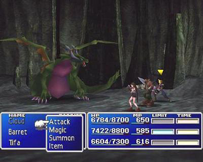

Jogos > RPG Saiba tudo sobre o Fintal Fantasy VII Atualizado em 06/Dezembro/2020 Jogabilidade A jogabilidade de Final Fantasy VII é dividida principalmente de três grandes áreas: um mapa do mundo de jogo, mapas de campo e telas de batalha. O mapa do mundo é uma representação tridimensional em escala de todo o mundo ficcional do jogo, pelo qual o jogador pode viajar entre as diferentes localidades existentes. Assim como nos jogos Final Fantasy anteriores, a travessia pode ser feita a pé, montando chocobos (aves galiformes recorrentes da série), dirigindo um pequeno buggy, pilotando uma aeronave ou por mar através de um submarino ou barco. Nos mapas de campo os personagens são direcionados por ambientes em uma escala realista em relação aos seus tamanhos, consistindo em fundos pré-renderizados bidimensionais que representam locais como cidades e florestas. O jogador inicialmente fica restrito apenas dentro da cidade de Midgard, porém todo o mundo torna-se disponível ao progredir pela história do jogo. A progressão pelo enredo central ocorre principalmente através de sequências roteirizadas, apesar de cutscenes cinemáticas pré-renderizadas também estarem presentes em diversos pontos da história. Combate As batalhas em Final Fantasy VII podem ocorrer randomicamente ou iniciadas por algum evento específico, colocando o grupo do jogador contra um ou mais inimigos. Vencer uma batalha ao derrotar todos os oponentes gera como recompensa experiência, itens e gil (a moeda do jogo). Entretanto, se todos os membros do grupo forem abatidos ou deixados incapazes de continuar no combate, o jogo termina e o jogador deve recomeçar a partir de seu último salvamento. A tela de batalha é uma representação tridimensional da área, como o interior de um edifício ou o meio de uma floresta, em que o jogador comanda os personagens em combates contra inimigos controlados pela inteligência artificial. Apesar dos personagens aparecerem super deformados nos mapas de jogo, seus modelos são apresentados de maneira realista e em escala normal durante as batalhas. Final Fantasy VII foi o primeiro jogo da franquia a utilizar modelos de personagem renderizados totalmente com polígonos. O jogo utiliza o tradicional sistema de combate "Active Time Battle", introduzido pela primeira vez em Final Fantasy IV. Diferentemente de jogos anteriores, em que até cinco personagens participavam dos confrontos, em Final Fantasy VII esse número é limitado a três. O sistema de habilidades de Final Fantasy VII é construído ao redor das Matérias: orbes mágicas compostas pela energia vital condensada do planeta, chamada de Mako. Elas são colocadas em espaços especiais de armas e armaduras, permitindo que os jogadores customizem as habilidades de seu grupo a fim de usar mágica, convocações e habilidades especiais. A Matéria é dividida em cinco categorias: Verde Magia para feitiços defensivos e ofensivos, Amarelo Habilidade que concede novas perícias, Vermelho Convocação que permite que monstros entrem no combate, Roxo Suporte que confere aumentos temporários nas estatísticas do personagem e Azul Junção que melhora outras Matérias ao ser colocado em espaços conectores (por exemplo, ligar Matéria de Fogo com Matéria Geral permite que o jogador ataque todos os inimigos simultaneamente com um feitiço de fogo). Porém, a maioria das magias baseadas em Matérias também diminui os atributos físicos do personagem em questão. Matéria e os personagens podem subir de nível com pontos de experiência, disponibilizando habilidades e funcionalidades mais fortes, com novas Matérias sendo criadas assim que chegarem no nível máximo.[6] Os feitiços de convocação também são equipáveis assim como a Matéria, com ataques elaborados podendo ser realizados. Uma versão modificada dos "Desperation Attacks" de Final Fantasy VI aparece em Final Fantasy VII na forma dos "Limit Breaks": cada personagem possui uma barra que gradualmente se enche a medida que sofrem danos em batalha; quando ela se enche, o personagem pode lançar seu Limit Break, uma ataque especial que inflige grandes danos nos oponentes ou que ajuda os outros membros do grupo.  O sistema de combate "Active Time Battle", mostrando o jogador selecionando uma opção de ordem para o personagem Cloud Strife.